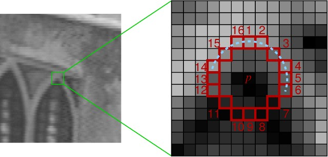
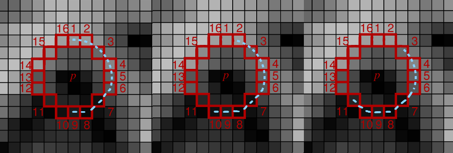
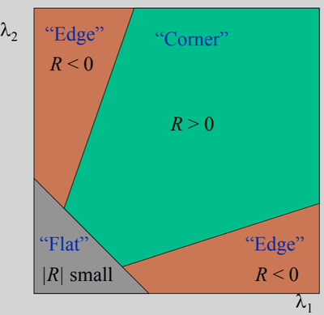
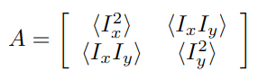
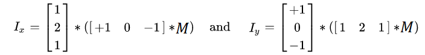

Homework – ORB detector
This homework will guide you through the implementation of part of the ORB (Oriented FAST and Rotated BRIEF) pipeline. The ORB consists of the feature detector and feature descriptor that detect and describe reproducible and discriminative regions in an image. Those, in turn, can be matched between pairs of images for correspondence search, 3D reconstruction, and so on.


Follow orb.ipynb to see how you can use the ORB pipeline for correspondence matching. In this homework, we will focus only on implementing the keypoints detector. The second part of orb.ipynb depends on your implementation, so you can incrementally implement your solution and watch how it works in jupyter notebook.
What you should know before you start
- Images could be in any format that OpenCV is capable to load. But in your functions you always deal with grayscale variant – see
_input_image()fixture intest_orb.pyhow conversion is done. - A grayscale image is 2D numpy array.
- Try to start with a naive approach; later, you can improve it.
- Inspect but do not modify
test_orb.py; maybe some clues could be distilled regarding private tests. - You can run only selected test with pytest – e.g.:
pytest test_orb.py -k test_calculate_kp_scores.
Step 1
In the ORB pipeline, the keypoints detector is an improved version of the FAST detector. FAST keypoints detector is based on a straightforward idea. In FAST, each pixel of an image is compared with other pixels at a Bresenham circle taken around it. Usually, a circle of radius 3 is used, meaning comparing each pixel with 16 others, as shown in the image below (left). If the center pixel is either darker than its neighbors or lighter than its neighbors, it is considered an interesting point and is added to the list of initial keypoints. A threshold is used for additional robustness, i.e., a center pixel should be either darker than or lighter than (for where is the intensity of -th point on the Bresenham circle).
Notice: You cannot use np.abs(center_pixel - ) < ; you must take the sign of intensity distance into account.

Left: rotated FAST keypoints detector. Right: oriented BRIEF keypoints descriptor.
We will start by implementing the basic version of the FAST keypoints detector. You will find the implementation template in orb.py. Implement the detect_keypoints() function. You will find helper testing code in orb.ipynb and some testing images in the test_images folder.
Hint: prepare some small (e.g., max 64×64 px) testing images for yourself.
To speed up the keypoint detection, FAST performs intensity checks in two steps: first, it compares the center pixel only to circle pixels at positions 1, 5, 9, and 13 (FAST_FIRST_TEST_INDICES). Then, if at least 3 (FAST_FIRST_TEST_THRESHOLD) circle pixels pass the intensity check, perform the check on all the pixels in the circle. At least 12 (FAST_SECOND_TEST_THRESHOLD) should now pass the test. Use FAST_ROW_OFFSETS and FAST_COL_OFFSETS to efficiently compute the coordinates of the circle pixels for each tested pixel. Feel free to precompute other indexes or masks if you find them useful.
Hint: do not test pixels whose index are closer than FAST_CIRCLE_RADIUS to the image border. In the provided template, there is also the parameter border, which means how many rows/columns are at the image border where no keypoints should be reported.

In the first step, test the center pixel only against pixels 1, 5, 9, and 13, marked in yellow. Then, if the first test passes, test the center pixel against all 16 pixels on the circle.
Hint: You can split a detect_keypoints() implementation into three steps: In get_first_test_mask(), you can create a mask of the original image where each pixel contains True if a given pixel passes the first 4-point check otherwise False. Next, in get_second_test_mask(), you can flag pixels that did not pass the full circle test with False. In the final step, you use these masks to detect key points. However, both get_first_test_mask() and get_second_test_mask() are not undergoing tests so you can implement detect_keypoints() without them in your way.
Step 2
Following the OpenCV’s implementation, for each keypoint, we also compute a score as a maximum of minimum abs-differences between the center pixels and all consecutive groups of 9 pixels on the Bresenham circle. For this, implement calculate_kp_scores() and call it from detect_keypoints() to get a score for all points in the initial FAST keypoints list (i.e., to keypoints variable).

Left: example image. Right: taking 9 consecutive pixels on a circle for the min abs-difference computation.
For each added keypoint, compare it to all groups of 9 consecutive pixels on the circle (you will have 16 groups like this, each starting from a different pixel on the circle). Calculate the minimum of absolute differences between the center keypoints and those 9 pixels. Report the final keypoint score as a maximum of those minimums from all 16 groups.
Hint: np.roll() In case you use np.roll for 2d shifts, better use argument axis=(0,1).

Example of three groups of 9 consecutive pixels. You have to take all 16 such groups and, for each group, calculate the minimum of the absolute differences. The final score is the maximum of those minimums.
Step 3
In ORB, this FAST keypoint detection is performed in multiple levels of an image pyramid to detect multi-scale keypoints appropriately. Implement the create_pyramid() function, which takes an image img and downscales it by downscale_factor n_pyr_layer times. On the first level is the original image, then downscaled are the following.
Hint: cv2.resize(), be careful, cv2.resize() expects switched X and Y coordinates than NumPy. The size of each level should be calculated as a float but rounded up.

Step 4
ORB comes with further improvements to the FAST keypoints detector. For example, it is noted that FAST can detect too many edges, which do not provide as good interest points as actual corners. To deal with it, the Harris corner measure is computed for each interest point detected in the previous step. The keypoints from the previous step are then sorted by the resulting corner measure. The top- keypoints are kept for each level where can be (and, in our implementation, will be) different for each level of the image pyramid.


Harris corner measure is a simple way to evaluate the “cornerness” of a pixel and is computed as:
Where is a constant usually equal to 0.05, and is the second-moment matrix for the given image (also called a structure tensor), defined as follows:

While the equation may seem confusing, you can calculate the second-moment matrix in several simple steps:s
- Implement
get_x_derivative()andget_y_derivative()to compute the x and y derivatives of the input image. The easiest way to do it is by applying the Sobel operator. Similar to the Gaussian filter, Sobel is a separable filter.

Hint: both these functions can be implemented in two lines each without usage of functions such as np.convolve, scipy.signal.convolve2d, and so on. Simple mathematical operations with NumPy are enough (+, -, and *). Also, consider using .astype(...) to avoid numerical errors during your calculations and np.pad() to keep the original image dimension.
Hint 2: scipy.signal.convolve2d preserves dimension with parameter mode='same', but the values in the first and last row/column differ from those expected here. These rows/columns should be filled by zeros if you use scipy.signal.convolve2d.
Hint 3: You can utilize your convolution implementation from the second homework.
- Now, implement
get_harris_response()to compute the Harris response for each pixel. First, calculate the weighted elements of the second-moment matrix. First, useget_x_derivative()andget_y_derivative()to get the first-order derivativesdxanddy. Then, you want to get (i.e.dx*dx), (i.e.dx*dy), and (i.e.dy*dy) at each pixel. Then, for each pixel, the window function is applied, and the values in the window are summed with the corresponding weight ( in the formula above). In our implementation, we will use Gaussian window, which means just applying the Gaussian 2D smoothing (with ) on all three matrices , and . It can be done byapply_gaussian_2d()function that is provided to you inutils.py. Then, compute the response from the determinant and trace the resulting second-moment matrix asR = det(A) - 0.05 * (trace(A) ** 2).
*Hint: Do not use np.linalg.det(); you have a matrix of shape (2, 2) (for each point of the input image); compute it manually for all points at once.
- Finally, implement
filter_keypoints()to sort the previously-computed interest points by their corresponding Harris response. For each level , leave only top- keypoints.
Conclusion
With all these successive steps implemented, it is time to combine them in the already provided/implemented fast() function to see how the algorithm’s steps should look when combined.